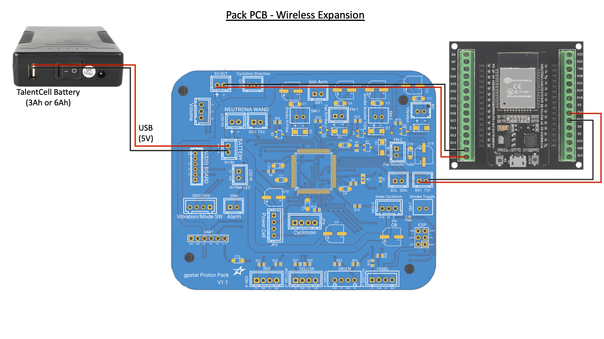

Wireless Adapter (Optional)
Use of the serial expansion port on the gpstar Proton Pack can bring WiFi capabilities to your unlicensed nuclear reactor! This is a minimal version of the Attenuator device without input or output devices (no lights, sound, vibration, or switches) and may be installed directly into your pack alongside the gpstar Proton Pack controller.
Video Installation Guide (YouTube, November 2023).

Bill of Materials
The configuration for this device is extremely simple and can be implemented with NO SOLDERING using the parts below. You will need a true ESP32 (ESP-WROOM-32 not ESP8266) development board with a terminal shield and a pair of JST-XH pre-wired connectors with bare wire ends.
ESP32 - Pin Connections
The following is a diagram of the ESP32 pins from left and right, when oriented with the USB connection facing down (south) like the pinout diagram above. Again, this table is based on the expected pin labels on the ESP32 itself--your terminal shield may differ slightly and should be checked for proper orientation when you insert the ESP32 into the socket.
| Connection | ESP32 (L) | ESP32 (R) | Connection | |
|---|---|---|---|---|
| EN | GPIO23 | |||
| GPIO36 | GPIO22 | |||
| GPIO39 | GPIO1 | |||
| GPIO34 | GPIO3 | |||
| GPIO35 | GPIO21 | |||
| GPIO32 | GPIO19 | |||
| GPIO33 | GPIO18 | |||
| GPIO25 | GPIO5 | |||
| GPIO26 | GPIO17 | to Pack RX1 | ||
| GPIO27 | GPIO16 | to Pack TX1 | ||
| GPIO14 | GPIO4 | |||
| GPIO12 | GPIO2 | |||
| GPIO13 | GPIO15 | |||
| to 5V-OUT - | GND | GND | ||
| to 5V-OUT + | VIN | 3.3V | ||
| USB |
As shown above you will only need 4 connections using the pair of JST-XH connectors connecting the 5V-OUT and RX1/TX1 sockets to the ESP32 device. Since the pre-wired connections may only have a red/black color pattern the diagram below has been intentionally designed with this in mind, though the table above should be consulted for connections if your device does not work as expected.
IMPORTANT: Please check all LABELS for proper connections, regardless of wire color. Some early parts/kits may have shipped with JST connectors which swap the order of the red/black wires.

Firmware Flashing
This device currently uses the exact same firmware image as the Attenuator device, so please see the ATTENUATOR_FLASHING guide for details on compiling and/or uploading software to your wireless adapter.
Operation
When using the ESP32 controller it is possible to connect to the device via WiFi. The SSID (Network Name) will be broadcast as "ProtonPack_####" where "####" is the last 4 hexadecimal values for the MAC address of the WiFi interface. This will differ for each ESP32 device, making each network unique to the attached pack. The default password is "555-2368" and can (and should) be changed via the web interface after successfully connecting to the network. The IP address for the device will be hardcoded as "192.168.1.2" with the web interface accessible at http://192.168.1.2.
For instructions on using the web interface to control your equipment, please see the Wireless Operations guide.
Security Notice
Once you have successfully paired with the WiFi network for the Proton pack, you are HIGHLY encouraged to change the default password. This is accessible via a link at the bottom of the main device page as noted above. Follow the prompts to enter and confirm a new password then re-join your pack's WiFi network with the new credentials.